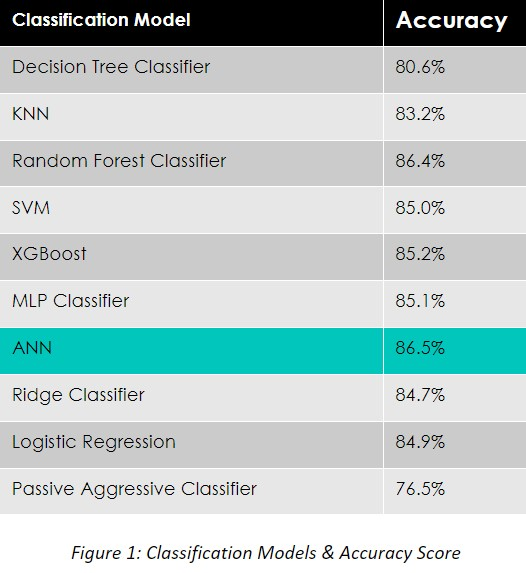

Summary
Diabetes is a prevalent chronic condition with severe health implications globally. This research uses data analytics and machine learning while utilizing the UCI machine learning repository diabetes health indicators datasheet and the CDC (Centers for Disease Control) city census data. This study aims to leverage data to predict, and identify key health indicators, analyze state prevalence, and provide recommendations for risk reduction. Various data analytics techniques like handling imbalanced data, feature selection, and classification models (Random Forest, ANN, etc.) are employed. Explainable AI using SHAP values was also applied to understand feature importance. The relationships between diabetes and other factors were explored in order to understand more about the disease. An interactive US map is also visualized to find nationwide diabetes concentrations. Results showed highly accurate classification models with Random Forest and ANN performing with the most accuracy. The research contributes valuable insight into diabetes prediction and risk factors, aiding in preventive healthcare strategies. Features such as education, physical activity, and mental health all emerged as influential in understanding diabetes prevention. Geographical analysis displayed variations in diabetes across different states and cities across the United States. SHAP values offered interpretable insight into the impact of individual features on the model prediction. In making data-driven recommendations based on our analysis, we first recommend focusing on the most prominent features when studying diabetes. These include Physical Health, Age, BMI, Mental Health, High Blood Pressure. We should also focus less on features such as No Doc Because of Cost, Veggies, Fruits, Cholesterol Check, and Any Health Care. When combined, all of this information could be used to help drive optimized public health initiatives which concentrate the most on the important aspects that play into having diabetes, located in high-risk areas.
Results
